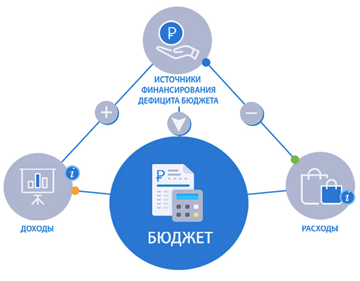

- Обращение руководителя
- О бюджете
- Брошюра "Бюджет для граждан"
- Планирование бюджета
- Исполнение бюджета
- Государственные программы
- Государственный долг
- Социально-экономическое развитие
- Межбюджетные отношения
- Финансовый контроль
- Общественное участие
- Финансово-хозяйственная деятельность
- Новости
- Контакты
- Карта сайта

Справочная информация о бюджете
БЮДЖЕТ - форма образования и расходования денежных средств, предназначенных для финансового обеспечения задач и функций государства и местного самоуправления (ст. 6 БК РФ).
Бюджет является одним из механизмов государственного регулирования в части формирования и развития экономической и социальной структуры общества. Бюджет может рассматриваться как экономическая и правовая категория. Бюджет как экономическая категория выражает систему экономических отношений между государством, с одной стороны, предприятиями, организациями и населением – с другой, по поводу распределения и перераспределения совокупного общественного продукта и национального дохода и формирования централизованного фонда денежных средств, направляемых на финансовое обеспечение задач и функций государства, социально-культурных мероприятий. Сущность бюджета как экономической категории реализуется через его функции:
- распределительная (перераспределение ВВП);
- регулирующая (государственное регулирование и стимулирование экономики);
- стимулирующая (финансовое обеспечение бюджетной сферы и осуществление социальной политики государства);
- контролирующая (контроль за образованием и использованием централизованных фондов денежных средств).
Поступления, формирующие доходную часть бюджета
Доходы бюджета – это денежные средства, поступающие в бюджет. Формирование доходов бюджетов основывается на бюджетном законодательстве, законодательстве о налогах и сборах, законодательстве об иных обязательных платежах. Доходы бюджета образуются за счет налоговых, неналоговых доходов и безвозмездных поступлений.
Налоговые доходы
Доходы от предусмотренных законодательством Российской Федерации федеральных налогов и сборов, в том числе от налогов, предусмотренных специальными налоговыми режимами, и законодательством Волгоградской области от региональных налогов.
Неналоговые доходы
Доходы от предоставления государством в пользование имущества и природных ресурсов, от различного вида услуг, а также платежи в виде штрафов и иных санкций на нарушение законодательства.
Безвозмездные поступления
Поступившие в бюджет денежные средства из федерального бюджета (межбюджетные трансферты), а также перечисления от физических и юридических лиц.
Расходы бюджета
Расходы бюджета – выплачиваемые из бюджета денежные средства.
Расходы могут классифицироваться
По государственным программам Волгоградской области
По главным распорядителям бюджетных средств (ведомственная структура)
По функциональной классификации расходов бюджетов

Комитет финансов Волгоградской области
400066, Волгоград, ул. Порт-Саида, 7
телефон: (8442) 30 91 06
факс: (8442) 38 58 91
Мы в социальных сетях: